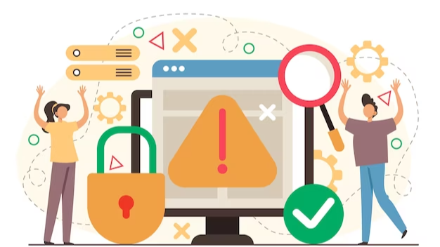
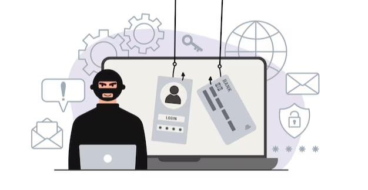

Phishing is a form of cyber attack that uses malicious emails to gain access to sensitive information. It is one of the most common security threats faced today, accounting for more than 30 percent of all cyber attacks. As phishing attacks continue to increase, it is essential to take proactive steps to protect yourself and your organization from potential threats.
Cybercriminals steal people's personal and financial details online through phishing schemes, tricking them to disclose confidential information. Cybertheft, identity theft and corporate espionage are often committed using information from victims.
Email-based phishing scamming has existed for a long time, and accounting systems have coincided with this from generation to generation of hackers. Email is currently the top source for phishing scams by unscrupulous hackers.

The proper strategies and devices will help IT departments prevent phishing emails from reaching employee inboxes.
The most significant obstacle that protects you against phishing scams is installing antivirus software, spam filters, and web filters. You can also deploy content filters so that your employees won't be able to access some malicious websites.
Keeping your software up-to-date also decreases your risk of being targeted by phishing scams. Upload frequent updates, and maintain constant vigilance with regard to whether your software and on-site hardware is functioning properly.
When was the last time you recently tested your backup and recovery plan? If you can't remember, this may be a sign that you've got too large of a backup procedure. Scheduling regular backups ensures that your data will be fully recoverable in the event of an emergency.
Establish password expiration and rules that govern allowable passwords to guarantee minimum password length, numbers and special characters make complex passwords difficult to break through.
One or more credentials is required to access a recipient's electronic records. Deploying multi factor authentication prevents people who have gained access to a user's credentials from gaining access to your systems and creates additional protection.
The best way to thwart phishing attempts is training your staff on the signs of suspicious emails and teaching them how to contact your help desk. Inform your employees that they should contact your IT department, Help Desk, or designated response team before responding to any questionable emails.

If employees frequently receive emails regarding customer service issues, this can be difficult for those engaging with the general public. Even so, anti-spam filters can help filter out malicious messages. Read on to help your employees minimize risk from internal emails.
Do not share personal information unless you verify it first-hand. Impressive people and companies will never ask you via email for confidential information. If you cannot verify that request via phone, email or text, you're less likely to become a target of danger.
Employees should never click on emails with hyperlinks, even if they appear to come from reputable sources..
When spoofing is combined with the danger or threat of a thing, the chances of falling for a phishing scam are dramatically increased. Making a career out of the idea of danger or urgency (such as the threat of a fine or closed account) often leads individuals to make rash decisions. Please be on the safe side and do not get in touch with the company in question through its website.
In the end, phishing emails are still a major security threat, and any organization should take proactive steps to protect itself. Implementing two-factor authentication, utilizing email filters, and training employees to recognize suspicious emails are all important steps to reduce the risk of a successful phishing attack. With the right tools and education in place, organizations can protect their valuable data and networks from malicious actors.